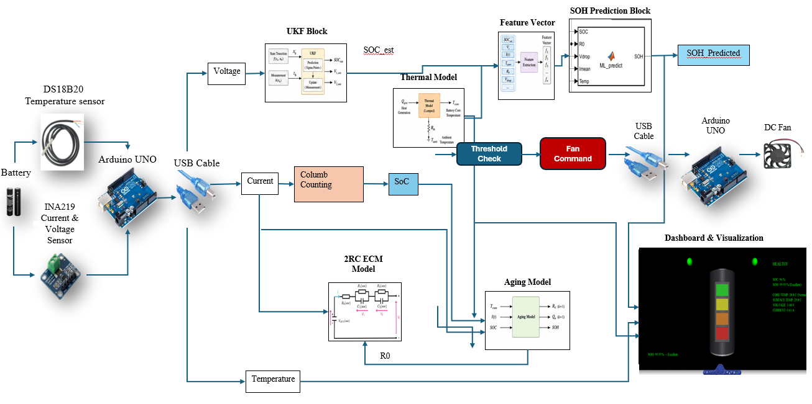
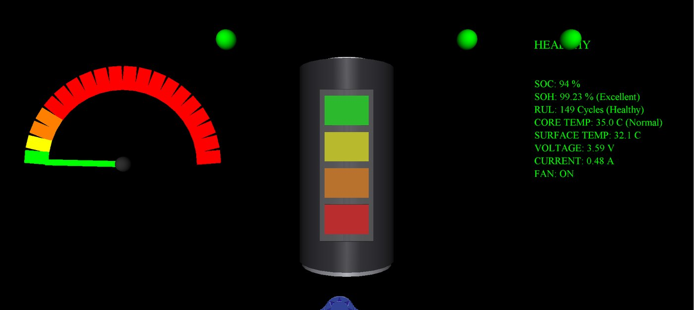
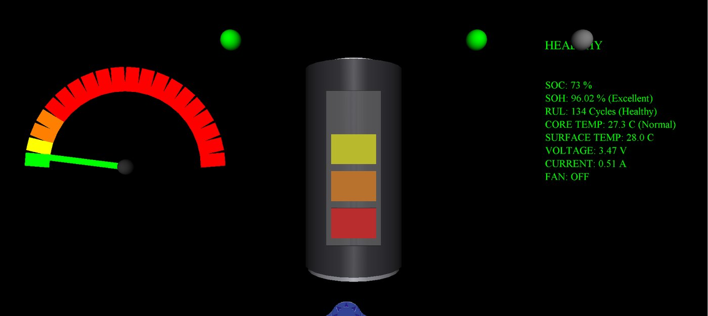
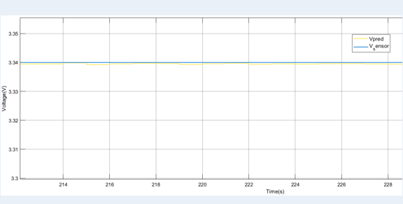
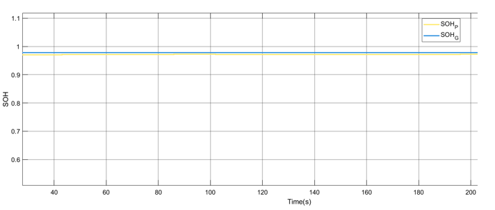

What I work on
Batteries, reactors and robots all degrade, drift or face disturbances that a fixed model does not capture. I build models that learn from data while respecting the underlying physics, then test them in closed loop, where predictions drive real decisions.
My interests include physics-informed machine learning for energy and process systems; battery degradation-mode diagnostics, identifiability and lifetime prognostics; neural-network surrogates for model predictive control; robustness and reproducibility of learned models through multi-seed and Monte Carlo evaluation; digital twins with hardware-in-the-loop deployment; and autonomous robot navigation and control.
An AI-enhanced digital twin for battery health
My undergraduate thesis, AI-Enhanced Digital Twin for Predictive Analytics of Battery Health and Degradation Dynamics, builds a real-time digital twin that mirrors a lithium-ion battery under different operating conditions.
The twin runs in MATLAB/Simulink with two-way communication to the hardware. Physics-based models (a 2RC equivalent circuit, a lumped thermal model and an aging model) work alongside a hybrid GRU–XGBoost model trained on NASA battery degradation data. Together they estimate state of health (SOH), state of charge (SOC) and remaining useful life (RUL). When the temperature crosses a threshold, the twin switches on a DC fan. The aim is maintenance that happens before failure, and better energy use in battery-powered systems.
- SensingLive cell dataDS18B20 temperature and INA219 current and voltage sensors, read by an Arduino UNO.
- State estimationSOCCoulomb counting alongside an unscented Kalman filter, in MATLAB/Simulink.
- Physics modelsECM · thermal · agingA 2RC equivalent circuit, a lumped thermal model for core temperature, and an aging model.
- AI layerSOH predictionA hybrid GRU–XGBoost model, trained on NASA battery degradation data.
- ActionFan commandAbove the temperature threshold, a second Arduino switches on a DC fan.
control signal returns to the hardware
Inside the digital twin
Two Arduino UNO boards connect the hardware to the models over USB. One reads the sensors, and the other drives the fan. In between, every signal passes through an estimator or a model before it reaches the dashboard.

System architecture. Sensor data flows through state estimation, physics models and the machine learning layer to the fan command and the live dashboard.

Fan on. SOC 94%, SOH 99.23%, core temperature 35.0 °C, above the threshold.

Fan off. SOC 73%, SOH 96.02%, core temperature 27.3 °C, back below the threshold.

Predicted terminal voltage against measured sensor voltage. The close match confirms the equivalent-circuit parameters before the AI layer is evaluated.

Live SOH from the XGBoost model against the physics-based aging model. The two estimates stay close throughout the run.
Physics-informed learning
Purely data-driven models can fit well and still fail outside their training data. My current work asks when physics-informed models do better, and how to test that fairly.
- Surrogates for model predictive controlPhysics-informed and black-box neural networks inside an MPC loop for a nonisothermal CSTR, compared over seven random seeds with Monte Carlo robustness analysis.
- Battery degradation modesEstimating degradation modes from partial discharge windows using a model trained only on simulation, then validated on two cell chemistries.
- Do the estimates help?Testing whether degradation-mode estimates forecast battery life and plan check-ups better than capacity alone, on three real-cell datasets.
Control for robotic systems
Alongside the learning work, I build and simulate robotic systems end to end: quadrotor navigation and SLAM with 6-DOF dynamics, LiDAR and stochastic wind in MATLAB; a mobile robot navigation stack combining Theta* planning, Pure Pursuit tracking and artificial potential fields; and vision-based PID stabilization with OpenCV.